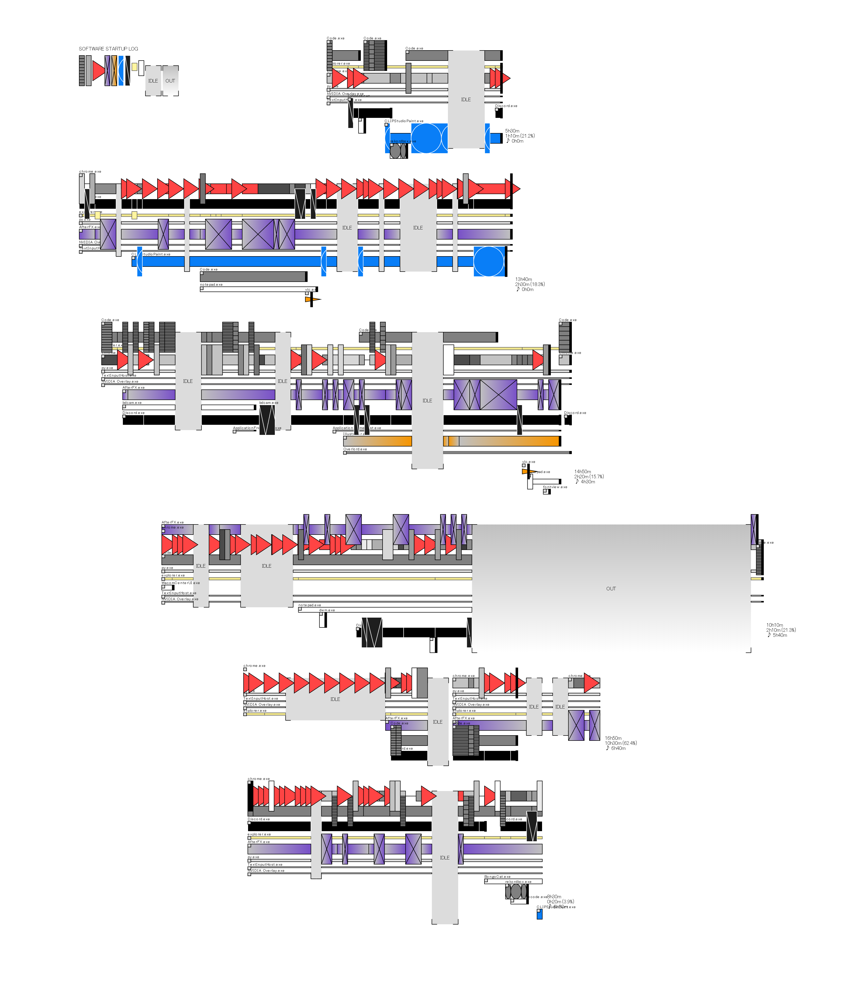
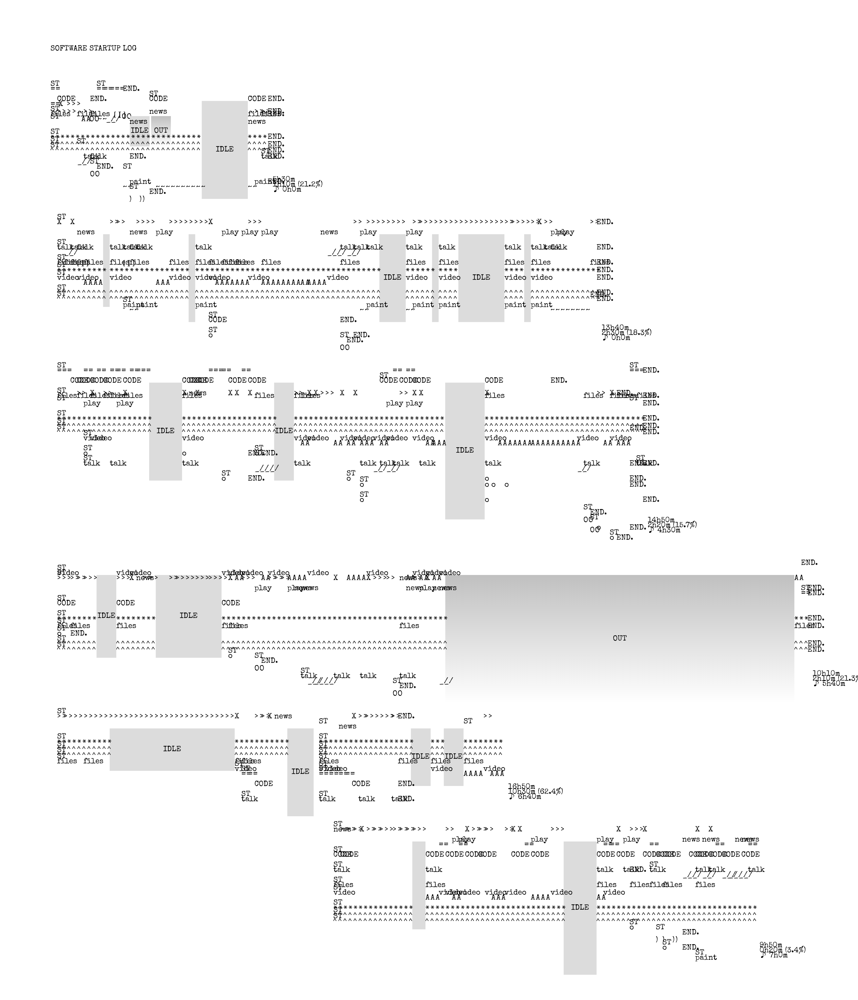

ポートフォリオの逆
hazuqu
PCの操作系統を監視してビジュアライズするツールを用意しました。いつも起動時に動き始めるpyファイルがあり、私の生活を少しだけ雑にしてくれるのですが、その機能の一つです。

構造
pyでPCの状態をみてリストに放り込みます。初期は操作毎に記録していましたが今は10分単位にしています。なので10分未満で操作しても記録には残りません。record = {
"timestamp": 時間,
"active_window": いまアクティブなウィンドウ,
"idle_seconds": 放置してからのカウントアップ,
"audio_playing": 音声が流れているかどうか
}
そのリストファイルを読んでp5.jsでrectを大量に置きます。
p5にしたのは単に慣れているからです。

テレタイプかタイプライターアートのような見た目にできるスキンも用意しました
もともと
SNSを見ていたらp5芸でrectをランダムに散らすグラフィックと、PCのスクショをOCRでテキスト化してJSONにしてAIで読み取らせて日報を作るツールhttps://twitter.com/kensuu/status/2003012829914501378が流れてきたので作りました。何のソフトをどのように扱っているかわからない反面、放置時間やネットサーフィンに時間を費やしている箇所が非常によく見えて、自分がなにをしていなかったのかを視覚化するツールとして適当に感じました。
ここからrectを過剰装飾して見づらくしていきました。
その用途で現在かなり活躍していまして、思ったより仕事の進捗に影響が出ていて良いです。
頑張るとJAGDAみたいなかわいいグラフィックが並んで嬉しく、放置しすぎるとグレーで覆われてバランスが崩れてしまう。ちょうどよく休むといい塩梅のグラフィックができるというわけです
それと自分の24+n時間周期の体内時計のズレや、体調が悪くなってベッドに行くタイミングだけ24時間周期で来ていることや、2ソフトを往復しているときにYoutubeの再生rectが優位に増えることつまり、マルチタスク時に想像以上に集中が足りていないということですねがわかって面白かったです。
もしデータが大量に集まったら1ヶ月単位でグラフィックを用意して貼れたら良いなと思います。ポートフォリオの逆です。
♥
⤴